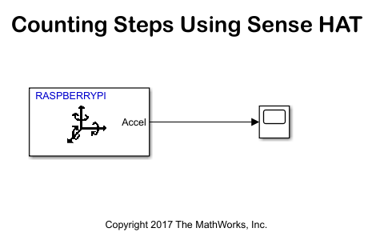
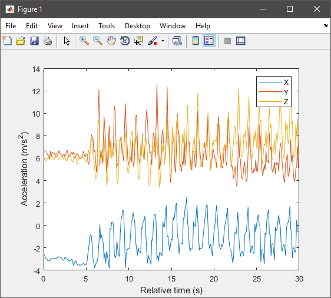
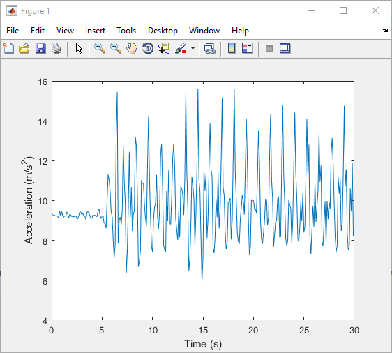
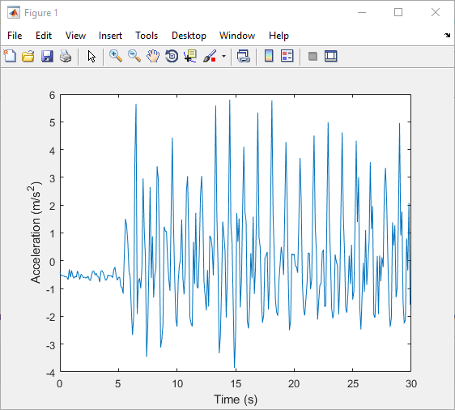
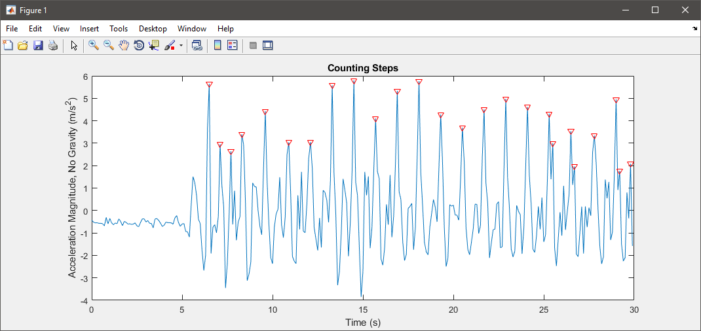

Counting Steps using Raspberry Pi Sense HAT
This example demonstrates an application that counts the number of steps a person walked while holding a Raspberry Pi™ Sense HAT.
Contents
Introduction
A pedometer is an electronic device that estimates the distance traveled by a person by recording the number of steps walked. Pedometers use an accelerometer to count the number of steps.
In this example, a Raspberry Pi™ SenseHAT records acceleration along X, Y, and Z axes. This data is recorded over a duration of time using the MAT-file logging feature. You can then use MATLAB® to analyze the imported MAT-files to count the number of steps.
To use the MAT-file logging feature with the Simulink® Support Package for Raspberry Pi™ hardware, you must have a Simulink Coder™ license.
Prerequisites
Before you start with this example, we recommend you to complete the Getting Started with Raspberry Pi® Hardware and MAT-file logging on Raspberry Pi Hardware® examples.
Required Hardware
To run this example, you must have the following hardware:
- Raspberry Pi board
- Raspberry Pi Sense HAT
Task 1 — Create a Simulink model for Raspberry Pi Hardware
1. Open the Log Accelerometer data using Raspberry Pi Hardware model.
2. In your Simulink model, click Simulation > Model Configuration Parameters to open the Configuration Parameters dialog box.
3. Under the Hardware Implementation pane, select Raspberry Pi in the Hardware board list. Do not change any other settings.
4. Click Apply to save your changes, and then click OK.
Task 2 — Enable MAT file logging
This task explains how to enable MAT-file logging to save acceleration data as MAT-files.
1. To open the Model Configuration Parameters dialog box, click the gear icon on the Simulink model toolbar.
2. Browse to Code Generation > Interface > Advanced Parameters, or type MAT-file logging in the search box.
3. Select the MAT-file logging option and click Apply to save the changes.
4. Click OK to close the dialog box.
5. In the Simulink model, double-click the Scope block, and click the gear icon to open the Configuration Properties dialog box.
6. In the Logging tab, select the Log data to workspace option, and click Apply to save the changes.
7. On the Simulink model toolbar, set the Simulation stop time parameter. This parameter specifies the duration for which the signals are logged. After the simulation stop time elapses, the logging of signals stops. However, your model continues to run. For example, if the Simulation stop time parameter is specified as 10.0 seconds, the signals are logged for 10.0 seconds, and then the logging stops. However, the model continues to run for indefinite time.
Task 3 — Deploy the Model on Raspberry Pi Hardware
1. On the Simulink model toolbar, click the Deploy To Hardware button. This action builds, downloads, and runs the model on the Raspberry Pi hardware.
2. Walk a few steps while holding the Raspberry Pi™ hardware. Make sure that you walk at least for the duration specified by the Simulation stop time parameter.
Task 4 — Import and Analyze Data
This task explains how to import the generated MAT-files from the hardware to your computer after the logging is completed.
1. In the MATLAB command window, use the following command to create a raspberrypi object. The parameters specified in this command must match the board parameters specified in Simulation > Model Configuration Parameters > Target hardware resources > Board Parameters.
r = raspberrypi(<IP address>, <username>, <password>);
2. Use the getFile function to copy the MAT-files from the Raspberry Pi™ board to your computer.
getFile(r,<filename>)
Here, r specifies the raspberrypi object and filename specifies the path and name of the file created. After importing the MAT-files, you can use it like a regular MAT-file for any further analysis in MATLAB®.
3. Load the MAT files into workspace variables.
load('raspberrypi_countstep_1_1.mat');
a(:,:) = rt_simout.signals.values(1,:,:) * 9.8;
a = a';
t = rt_tout;
4. Plot raw sensor data.
plot(t, a); legend('X', 'Y', 'Z'); xlabel('Relative time (s)'); ylabel('Acceleration (m/s^2)');

5. Process raw acceleration data.
To convert the XYZ acceleration vectors at each point in time into scalar values, calculate the magnitude of each vector. This way, you can detect large changes in overall acceleration, such as steps taken while walking, regardless of device orientation.
x = a(:,1); y = a(:,2); z = a(:,3); mag = sqrt(sum(x.^2 + y.^2 + z.^2, 2));
Plot the magnitude to visualize the general changes in acceleration.
plot(t, mag); xlabel('Time (s)'); ylabel('Acceleration (m/s^2)');

The plot shows that the acceleration magnitude is not zero mean. Subtract the mean from the data to remove any constant effects, such as gravity.
magNoG = mag - mean(mag); plot(t, magNoG); xlabel('Time (s)'); ylabel('Acceleration (m/s^2)');

The plotted data is now centered about zero and clearly shows peaks in acceleration magnitude. Each peak corresponds to a step being taken while walking.
6. Count the number of steps taken.
Use findpeaks, a function from the Signal Processing Toolbox™, to find the local maxima of the acceleration magnitude data. Only peaks with a minimum height above one standard deviation are treated as a step. This threshold must be tuned experimentally to match a person's level of movement while walking, hardness of floor surfaces, and other variables.
minPeakHeight = std(magNoG);
[pks, locs] = findpeaks(magNoG, 'MINPEAKHEIGHT', minPeakHeight);
The number of steps taken is simply the number of peaks found.
numSteps = numel(pks)
Visualize the peak locations with the acceleration magnitude data.
hold on; plot(t(locs), pks, 'r', 'Marker', 'v', 'LineStyle', 'none'); title('Counting Steps'); xlabel('Time (s)'); ylabel('Acceleration Magnitude, No Gravity (m/s^2)'); hold off;

Summary
This example demonstrated the use of the IMU sensor on Raspberry Pi™ Sense HAT to count the number of steps a person walked.